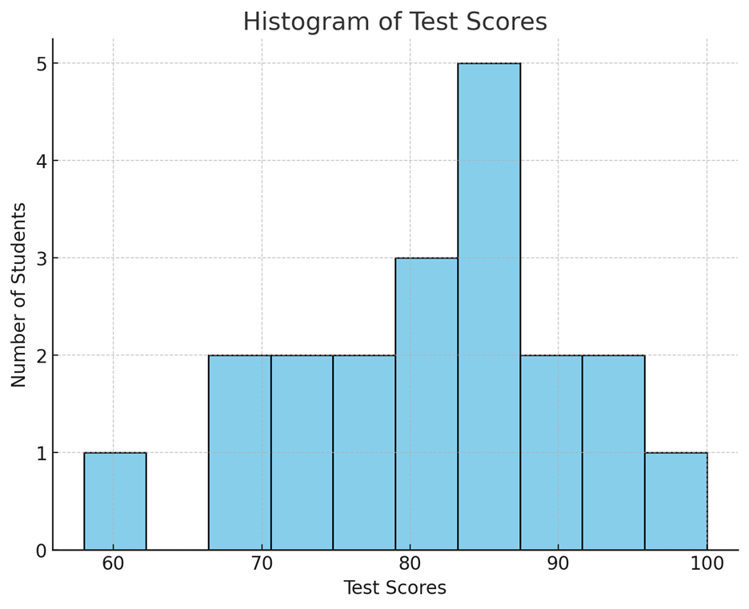
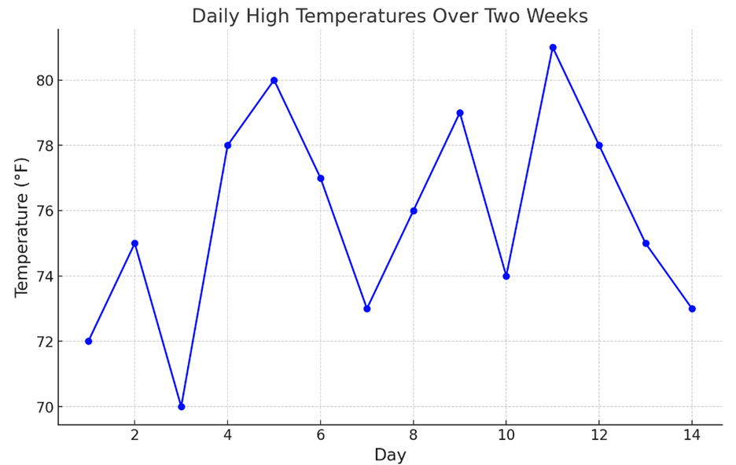
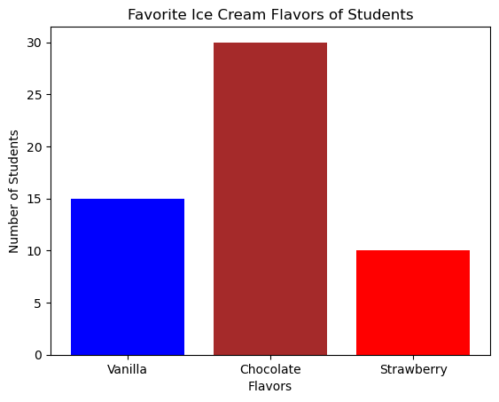
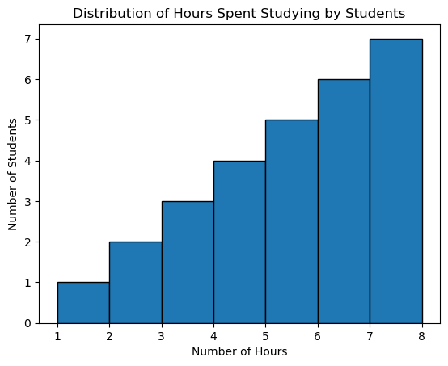
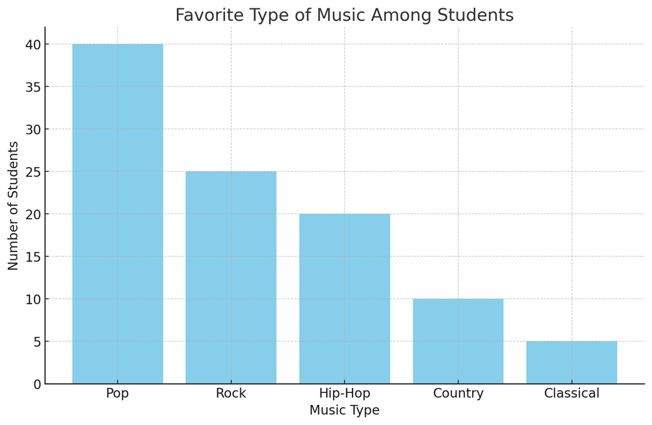
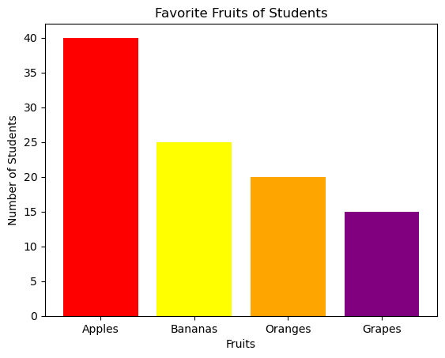
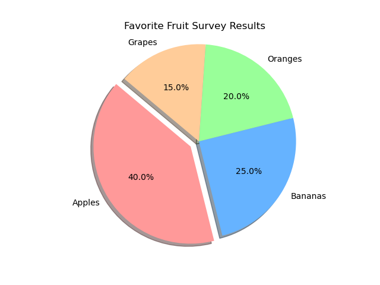

This part covers the following topics:
Topic 1.1 Introducing Statistics: What Can We Learn from Data?
Topic 1.2 The Language of Variation: Variables
Topic 1.3 Representing a Categorical Variable with Tables
Topic 1.4 Representing a Categorical Variable with Graphs
What is Statistics?
Statistics is the science of collecting, analyzing, and interpreting data to answer questions about the world. We encounter data in our daily lives, such as test scores, weather patterns, and sports statistics. By studying statistics, we learn how to make sense of this data and use it to draw meaningful conclusions.
Learning Objective 1: Identifying Questions Based on Variation in One-Variable Data
What is One-Variable Data?
One-variable data involves observing or measuring a single characteristic of individuals or objects. For example, if we record the heights of all students in a class, height is the one variable we are focusing on.
Variation refers to the differences or changes we observe within this data. Not everyone in the class will have the same height; some will be taller, and some will be shorter. This variation is key to identifying interesting patterns or trends in the data.
Example: Student Test Scores
Let s say we have the test scores of 20 students in a math exam: 58, 73, 85, 92, 85, 76, 90, 100, 67, 82, 85, 73, 89, 77, 84, 94, 87, 79, 81, 68
When we look at these scores, we see variation some students scored very high, others scored lower, and some scored in the middle. Based on this variation, we might ask questions such as:
These questions help us understand the distribution of scores and identify patterns.
Real-World Example: Daily Step Counts
Imagine you tracked the number of steps you took each day for two weeks. Some days you walked more, and some days less. Here s your data for 14 days: 4000, 5500, 6000, 8000, 7000, 9000, 7500, 6200, 5800, 6300, 7000, 8500, 9200, 6700
By looking at this data, you might ask:
Learning Objective 2: Numbers in Context Finding Meaning
Why Context Matters
Numbers alone can be meaningless unless we understand the context they are placed in. For example, knowing that someone scored 90 on a test is more meaningful if we know the test was out of 100 points, rather than out of 1000.
Example: Exam Scores
Let s revisit our test score example. If a student scored 85, this number alone doesn t tell us much. But when we place it in context knowing the test was out of 100 points, that the average score was 78, and that the passing score was 70 we understand that this student performed well above average.
Real-World Example: Temperature Data
Imagine the temperature today is 35 F. By itself, this number might not seem meaningful. However, if we know that the average temperature for this time of year is 45 F, and that it usually drops below freezing at 32 F, we can conclude that today is colder than usual.
Visualizing Data with Graphs
Graphs help us see patterns in data more clearly. Below is a histogram of the student test scores we discussed earlier:
This histogram shows how often each score range occurred. For example, we can see that scores between 80 and 90 were most common. This visual representation helps us quickly identify trends and outliers.
Free Response Problem: Understanding Data in Context
Problem: You have recorded the number of hours you sleep each night for two weeks (14 days): 6, 7.5, 8, 7, 6.5, 9, 8, 7, 8.5, 7.5, 6, 7, 7.5, 8
Conclusion
Understanding statistics involves recognizing patterns in data and placing numbers in context to extract meaningful information. Whether it s analyzing test scores, step counts, or sleep hours, statistics help us make informed decisions and draw insights from the world around us.
Learning Objective 1: Variation and Uncertainty
Explanation: In statistics, variation refers to the differences or changes in data points. Variation can occur randomly or due to specific factors. Because of this variation, the conclusions we draw from data are often uncertain. Even when we notice patterns, we can't be completely sure that they will always hold true, especially if the variation is random.
Example: Imagine rolling a die. Each time you roll, you can get a number between 1 and 6. The result of each roll is different (variation), and you can t predict the exact number you ll get next. Even though you might see a pattern (e.g., you rolled a 3 three times in a row), you can't be sure the next roll will be a 3 too.
Real-World Example: Consider predicting the weather. Meteorologists use data to forecast the weather, but there's always some uncertainty because of random variation in atmospheric conditions. That's why sometimes the forecast predicts rain, but it doesn t rain, or it rains more than expected.

Graph Description: This graph shows the daily high temperatures over two weeks. Notice how the temperatures vary from day to day, with some days being hotter and others cooler. This variation makes it challenging to predict the exact temperature on any given day.
Free Response Problem: Think about the grades you receive on tests. Are your test scores exactly the same every time? Why might your scores vary from test to test? Write a short paragraph explaining how random and non-random factors could affect your grades and why this makes predicting your exact score on the next test uncertain.
Learning Objective 2: Understanding Variables
Explanation: A variable in statistics is any characteristic or property that can take on different values among individuals in a dataset. For example, the height of students in a class is a variable because not all students are the same height.
Example: If you survey your classmates about their favorite fruit, the answers might include apples, bananas, oranges, etc. The favorite fruit is the variable because it changes from one person to another.
Real-World Example: In a study about study habits, the number of hours students spend studying per week is a variable. Different students study for different amounts of time, so this number varies.
Free Response Problem: List three variables that might change from one student to another in your school. Describe why each of these characteristics is considered a variable.
Learning Objective 3: Categorical Variables
Explanation: A categorical variable is one that takes on values in the form of category names or group labels. These variables are not numerical; instead, they describe qualities or characteristics.
Example: Types of pets owned by students in your class such as "dog," "cat," "fish," etc. are categorical variables because they represent categories, not numbers.
Real-World Example: When conducting a survey on favorite movie genres, the responses might include "action," "comedy," "drama," etc. Each response is a category, making this a categorical variable.

Graph Description: A bar chart showing the favorite ice cream flavors of students in a class. Each bar represents a different flavor (vanilla, chocolate, strawberry), and the height of the bar shows how many students prefer that flavor. The flavors are categorical variables.
Free Response Problem: Imagine you re conducting a survey about favorite hobbies. What are three examples of categorical variables you could collect from your classmates? Explain why these are categorical and not quantitative.
Learning Objective 4: Quantitative Variables
Explanation: A quantitative variable takes on numerical values that represent some quantity that can be measured or counted. These values allow us to perform mathematical operations like adding and averaging.
Example: The number of books a student reads in a month is a quantitative variable because it's a number that can be counted and compared.
Real-World Example: The amount of time (in minutes) students spend on homework each day is a quantitative variable. You can measure this time, and it s expressed in numbers.

Graph Description: A histogram showing the distribution of hours spent studying by students. The x-axis represents the number of hours (a quantitative variable), and the y-axis shows the number of students who study for that amount of time.
Free Response Problem: Suppose you collect data on the number of hours students in your class spend on their hobbies each week. Explain why the number of hours is considered a quantitative variable and how this data might be used to find an average.
Summary: Understanding variables is crucial in statistics because they represent the data we analyze. Whether dealing with categorical or quantitative variables, recognizing the type of variable helps us decide how to handle the data and what conclusions we can draw.
Introduction
In statistics, we often work with data that can be categorized into different groups. For example, we might be interested in the favorite types of music among students in a class. Categorical data helps us understand how different categories compare to each other.
1. Graphical Representations and Key Features of Data
Graphical representations like bar charts and pie charts allow us to see the key features of categorical data at a glance. These visual tools make it easier to identify patterns, trends, and outliers in the data.
Data Example:
Imagine a survey was conducted among 100 students to find out their favorite type of music. The results are as follows:
We can represent this data using a bar chart:

In the bar chart, each bar represents the number of students who prefer each type of music. The height of the bar shows the frequency of each category.
2. Frequency and Relative Frequency Tables
A frequency table lists the number of cases (or counts) in each category. A relative frequency table shows the proportion (or percentage) of cases in each category.
Frequency Table:
|
Music Type |
Frequency |
|
Pop |
40 |
|
Rock |
25 |
|
Hip-Hop |
20 |
|
Country |
10 |
|
Classical |
5 |
Relative Frequency Table:
|
Music Type |
Relative Frequency |
|
Pop |
0.40 |
|
Rock |
0.25 |
|
Hip-Hop |
0.20 |
|
Country |
0.10 |
|
Classical |
0.05 |
Note: The relative frequency is calculated by dividing the frequency by the total number of students (100 in this case).
3. Percentages, Relative Frequencies, and Rates
Percentages, relative frequencies, and rates all provide the same information as proportions, just expressed differently. They help us understand the data in a way that's easy to interpret.
4. Justifying Claims with Data
Counts and relative frequencies can be used to make claims about the data. For example, we can claim that "Pop is the most popular music type among students" because it has the highest count and relative frequency.
Real-World Example: Favorite Ice Cream Flavors
Let s say a local ice cream shop wants to know the most popular flavors among its customers. They record the following data over a week:
|
Flavor |
Frequency |
Relative Frequency |
Percentage |
|
Vanilla |
150 |
0.30 |
30% |
|
Chocolate |
120 |
0.24 |
24% |
|
Strawberry |
90 |
0.18 |
18% |
|
Mint |
70 |
0.14 |
14% |
|
Others |
70 |
0.14 |
14% |
Graphical Representation: The shop could use a pie chart to represent this data, making it easy to see that Vanilla is the most popular flavor.
Free Response Problem
Problem: A school cafeteria surveyed 200 students to find out their preferred lunch options. The results are shown below:
|
Lunch Option |
Frequency |
|
Pizza |
80 |
|
Sandwich |
50 |
|
Salad |
40 |
|
Pasta |
30 |
Solution:
|
Lunch Option |
Relative Frequency |
|
Pizza |
0.40 |
|
Sandwich |
0.25 |
|
Salad |
0.20 |
|
Pasta |
0.15 |
This reading material should help you understand how to represent categorical data using tables and how to interpret the information they provide. Feel free to ask questions or bring up examples from your own experiences!
Introduction
Graphical representations and statistics are powerful tools that help us to identify and showcase key features of data. In this reading material, we will explore how bar charts (or bar graphs) are used to represent categorical data, understand the significance of the height or length of bars, and learn about other methods of representing categorical data. We will also see how these graphical tools can help us make claims about the data in context.
1. Graphical Representations of Categorical Data
Categorical Data refers to data that can be divided into different categories, like types of fruits, colors of cars, or genres of movies. Each category is distinct and doesn't overlap with others.
Example:
Let's consider a survey where 100 students were asked about their favorite fruit. The responses were categorized as follows:
2. Bar Charts for Categorical Data
A Bar Chart (or bar graph) is a common way to display categorical data. It shows the frequency (count) or relative frequency (proportion) of each category using bars. The height or length of each bar represents how many observations fall into each category.
Creating a Bar Chart:
For the fruit survey example, the bar chart would look like this:

In this bar chart:
3. Understanding the Height of Bars
The height (or length) of each bar in a bar chart is important because it shows how many observations (students, in this case) are in each category. Higher bars mean more students prefer that category.
4. Other Ways to Represent Categorical Data
While bar charts are popular, there are other methods to represent categorical data:

Example:
Let s say you want to compare the favorite fruits of students in two different classes (Class A and Class B). You could use a segmented bar chart to see how the preferences differ between the two classes.
5. Making Claims from Graphical Representations
Graphical representations can reveal patterns and trends that help us make claims about the data. For instance:
6. Comparing Two or More Data Sets
When you have more than one data set, you can use bar charts or other graphical tools to compare them side by side.
Example:
Suppose you have data on favorite fruits from two schools, and you want to compare the preferences. You could use two bar charts side by side or a segmented bar chart to visually compare the preferences between the two schools.
Free Response Problem:
Problem: A school conducted a survey to find out students' favorite sports. The data collected is shown in the frequency table below:
|
Sport |
Frequency |
|
Basketball |
30 |
|
Soccer |
25 |
|
Tennis |
15 |
|
Swimming |
20 |
|
Baseball |
10 |
Solution:
Conclusion
Understanding how to represent categorical data graphically is a key skill in statistics. Bar charts, frequency tables, and other tools allow us to visualize and compare data easily. By practicing with real-world examples and problems, you'll become more confident in interpreting and creating your own graphical representations of data.